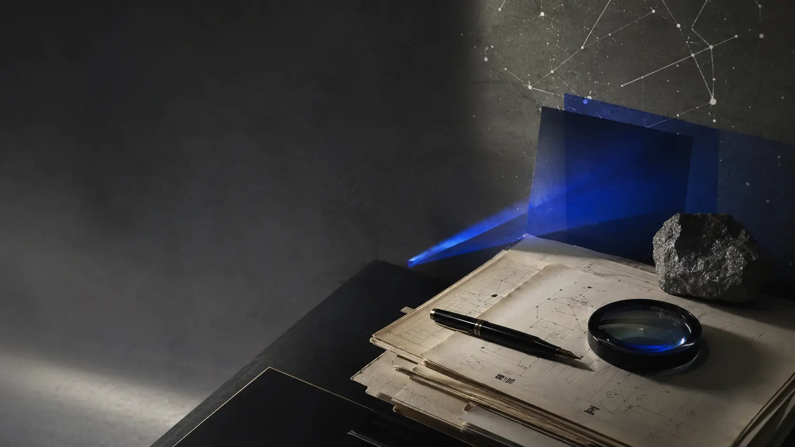

DJI 드론 실습 사전 준비 — 비행은 현장에서, 준비는 지금
내 기체와 조종기에 맞춰 앱 설치·저장공간·촬영 시간·실습 준비를 확인하는 재사용형 웹 프레젠테이션.

교수 · 저자 · 창작자 · 시스템 설계자Professor · Author · Creator · System Designer
AI에게 판단을 맡기지 않고,AI와 함께 메시지의 몸을 만드는 사람.I do not hand judgment to AI.I work with AI to give messages a body.
미디어융합 전공 공학박사 김준호는 음악, 영상, 출판, 제품, 연구와 사회적 가치를 하나의 인과관계로 연결합니다.Joonho Kim, Ph.D. in media convergence, connects music, video, publishing, products, research, and social value through one causal body.
미디어는 메시지의 몸이다.Media is the body of the message.
홈은 모든 내용을 쌓아놓는 곳이 아니라 각 관계로 들어가는 문입니다.The home page is a set of doors into distinct relationships, not a pile of every detail.
만드는 행위가 어떤 관계와 태도를 갖는지 보여줍니다.How acts of making embody relation and attitude.
생각과 주장이 기록과 증거의 몸을 갖습니다.Ideas and claims take on bodies of record and evidence.
기술과 창작이 나눔의 거리를 줄입니다.Technology and creation shorten the distance to sharing.
판단의 기준과 최종 책임이 한 사람의 태도를 드러냅니다.Criteria for judgment and final responsibility reveal the person behind the work.
노래, 슬라이드, 화면과 이야기가 배포로 끝나지 않고 다음 창작을 바꾸는 기억으로 축적됩니다.Songs, slides, screens, and stories accumulate as memory that changes the next creation.
내 기체와 조종기에 맞춰 앱 설치·저장공간·촬영 시간·실습 준비를 확인하는 재사용형 웹 프레젠테이션.

봉투 한 장의 친절이 내일도 함께 걷고 싶은 약속으로 이어지는 미리내맨의 첫 숏 드라마.

손녀가 멈춰 있던 가족의 회전목마를 다시 돌리고 젊은 할아버지는 같은 사랑을 새로 배운다.

장풍은 용이 되어 내리고, 합마공은 두꺼비가 되어 오른다. 먹 속에서 맺히고 맞부딪치는 31초 수묵 무협.

잘못 건넨 커피 한 잔이 두 사람의 꽤 괜찮은 시작이 되는 로맨틱 코미디 단편.

AI님 앞에서 한없이 공손해지는 세 사람. 돈은 내가 내고 눈치도 내가 보는 시방 트리오의 웹툰 트로트 뮤직비디오.